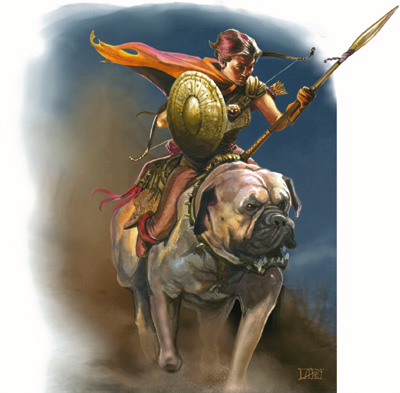

半身人开路骑兵（Ｈａｌｆｌｉｎｇ Ｏｕｔｒｉｄｅｒ）

半身人的游牧游牧生活方式使他们经常会遇到突发的危险。为了自卫，很多半身人团体组成了自己的开路骑兵队。这些精英战士们的任务就是在危险来临时警告并保护他们的族人。很自然的，这些开路骑手都精通于骑术和侦察。
大多数半身人开路骑兵都是战士、巡林客、德鲁伊或游荡者。然而，无论哪个职业都可以从半身人开路骑兵固有的ＡＣ加值和防御式骑术等能力中受益。
通常发现ＮＰＣ半身人开路骑兵时，他们要么正在当值，要么在不当值的时间里放松自己。无论他们正在工作或是休假，都能肯定的一点是他们所属的半身人团体就在附近。
然而，个别一些开路骑兵会感到冒险对他们的吸引力更大，他们会离开他们的族人和家园，走上冒险的路。
生命骰数（Ｈｉｔ Ｄｉｅ）：Ｄ８
职业需求（Ｒｅｑｕｉｒｅｍｅｎｔｓ）：
你的人物角色必须符合以下所有条件，才有资格成为一名半身人开路骑兵：
种族（Ｒａｃｅｓ）：半身人
基本攻击加值（Ｂａｓｅ Ａｔｔａｃｋ Ｂｏｎｕｓ）：＋５
技能（Ｓｋｉｌｌｓ）：聆听：３级，骑乘：６级，侦察３级
专长（Ｆｅａｔｓ）：骑乘战斗，骑乘射击
本职技能（Ｃｌａｓｓ Ｓｋｉｌｌ）：
半身人开路骑兵的本职技能如下（括号中为该技能的关键属性）：“驯养动物”（魅力），“聆听”（感知），“骑术”（敏捷），“侦察”（感知）和“野外求生”（感知）。
升级可得到的技能点数（Ｓｋｉｌｌ Ｐｏｉｎｔｓ ａｔ Ｅａｃｈ Ａｄｄｉｔｉｏｎａｌ Ｌｅｖｅｌ）：４＋智力调整值。
表２－１３：半身人开路骑兵
等级 ＢＡＢ ＡＣ加值 强韧 反射 意志 特殊能力
１ ＋１ ＋１ ＋０ ＋２ ＋０ 坐骑，警觉，骑乘加值
２ ＋２ ＋１ ＋０ ＋３ ＋０ 防御式骑乘
３ ＋３ ＋２ ＋１ ＋３ ＋１ 无畏冲刺
４ ＋４ ＋２ ＋１ ＋４ ＋１ 马背站立
５ ＋５ ＋３ ＋１ ＋４ ＋１ 跳鞍
６ ＋６ ＋３ ＋２ ＋５ ＋２ －－
７ ＋７ ＋４ ＋２ ＋５ ＋２ 反射回避
８ ＋８ ＋４ ＋２ ＋６ ＋２ 全力骑击
９ ＋９ ＋５ ＋３ ＋６ ＋３ －－
１０ ＋１０ ＋５ ＋３ ＋７ ＋３ 快速转向
职业特性（Ｃｌａｓｓ Ｆｅａｔｕｒｅｓ）
以下内容都是半身人开路骑兵这个进阶职业的职业特性：
武器与装甲熟练：半身人骑手不擅长任何武器与防具。
ＡＣ加值：半身人开路骑兵在骑乘状态下可以获得额外的闪避ＡＣ加值。然而一旦人物处于失去敏捷加值状态，那么这额外的骑乘ＡＣ加值也会失去。
坐骑：半身人开路骑兵拥有一个自己的坐骑，这头坐骑往往是他所属的半身人团体的财产之一。多数半身人部落都会尽力给他们的开路骑兵配置骑乘用犬或矮种战马。当然，一个半身人开路骑兵也许会选择别的方法来获取更特别的坐骑，比如寻找、训练或收购。缰绳之类的马具自然也少不了供应，同样的，当然也会有角色会想自己购置套精巧马具或魔法缰绳之类的东西。
半身人开路骑兵职业等级可以和圣骑士、德鲁依、游侠职业等级累计起来，并由这个累计等级来决定坐骑、圣骑士坐骑和动物伙伴的等级。
警觉：半身人开路骑兵可以自动获得警觉这个专长。
骑乘加值：半身人开路骑兵在做骑术检定时可以获得一个与职业等级相同的加权值。
防御式骑乘（特异能力）：一个２级或更高等级的半身人开路骑兵对骑乘同时防御的伎俩了如指掌。如果他骑在马背上时什么都不做便可自动进入防御式骑乘状态（自然，在防御式骑乘时不可进行攻击），此时他能获得＋２反射检定和＋４闪避ＡＣ加值。此外，他的坐骑也能获得＋２０移动速度、＋２意志检定和＋４闪避ＡＣ。
无畏冲刺（特异能力）：一个３级或更高等级的半身人开路骑兵在骑乘状态下冲锋时，若做一个ＤＣ１５的骑术检定并通过，便能轻易地从崎岖不平的地形或是拥挤的非敌对人堆中穿过。
马背站立（特异能力）：到了４级时，无论是在移动还是战斗中，一个半身人开路骑兵都能自如地站在坐骑背上。做这个动作时必须通过一个ＤＣ为２０的骑术检定。当站在坐骑背上时，半身人开路骑兵无需因为在坐骑用两倍速度移动或奔跑时使用远程武器而遭到不利减值（详见骑射专长描述，玩家手册９８页）。
跳鞍（特异能力）：一个５级或更高等级的半身人开路骑兵可以以一个即时动作跃下马鞍，并在坐骑身旁平稳着陆。该动作须通过ＤＣ为２０的骑术检定。如果敌人位于他的威胁区域（以跳鞍落地后的落点为依据），他便可对对方发动一个全回合攻击，攻击检定＋２自身ＡＣ－２（类似冲刺效果）。这个特技只能用在坐骑未到两倍移动速度时。
反射闪避（特异能力）：７级时半身人开路骑兵能获得反射回避专长。当他通过反射检定时，若对普通人仍能造成一般伤害，则对他而言则是完全不造成任何伤害。只有在穿着轻甲或不穿甲时才能使用本专长。当然，无助状态下（如昏迷或瘫痪等）的半身人开路骑兵是同样无法享有此能力的。
当一个半身人开路骑兵骑着坐骑时，他可以将这个能力赋予他的坐骑，而且它还可以使用它主人的反射豁免值来代替自己的，如果那个值更高的话。
如果一个角色原来就具有反射闪避专长，那么他现在就可以用强力反射回避来代替，而他的坐骑也同样能向上文中描述的那样从中受益。强力反射回避与反射回避类似，通过反射检定便不受伤害，不同点仅在于拥有强力反射回避时未通过反射检定也只受一半伤害。
全力骑击（特异能力）：在８级或更高级时，当半身人开路骑兵坐骑的速度超过５英尺又不超过一个标准移动的距离时，他便可以做一个全回合攻击。全力骑击无法与冲锋向结合。
快速转向（特异能力）：１０级的半身人开路骑兵能以一个即时动作调转飞奔的坐骑的前进方向，哪怕是在冲锋过程中（尽管转向后坐骑至少还要再沿着直线移动１０英尺才能实现冲锋）。这个动作要求通过ＤＣ２５的骑术检定。转向角度可能最多只有９０度，而坐骑每回合只能完成一次这个动作。如果骑术检定未通过，坐骑会继续沿直线移动１０英尺，而后便失去了它本回合剩下的行动力而无法做任何事。
模板（Ｓａｍｐｌｅ）：
Ａｌｔｅｓｉａ Ｃｏｏｐｅｒｓｍｉｔｈ
阿尔特西亚 桶匠
半身人游侠５/半身人开路骑兵５
挑战级别：１０
小体形类人生物
ＨＤ：（５ｄ８＋１０）＋（５ｄ８＋１０）
ＨＰ：５６
先攻调整：＋４
速度：２０/４０（骑乘时）
ＡＣ：２２（骑乘时２５），接触１５，措手不及１８
基本攻击值：＋１０
擒抱：＋９
攻击：＋１７近战（１ｄ６＋２／×３，＋１长枪）或＋１６远程（１ｄ６＋２／×３，＋１复合长弓）
ＳＡ：跳鞍
ＳＱ：动物伙伴，战斗风格，防御式骑乘２／天，宿敌（魔法兽）＋４，宿敌（类地精生物）＋２，半身人特性，马背站立，无畏冲刺，野生动物理解
阵营：守序善良
豁免：强韧＋１０，反射＋１５，意志＋６
属性：力量：１２，敏捷：１８，体质：１４，智力：８，感知：１２，魅力：１０
技能和专长：攀爬＋３，威吓＋８，跳跃－３，聆听＋１８，无声移动＋６，骑术＋２２，搜索＋７，侦察＋１６，野外求生＋９；警觉，坚韧，骑乘战斗，骑乘射击，近程射击，快速射击，快速骑乘攻击，追踪
跳鞍（特异能力）：只要当她的坐骑未到两倍移动速度，阿尔特西亚可以做一个ＤＣ２０的骑术检定来以一个即时动作跳下坐骑。然后她能对一个在威胁范围内的敌人做一次近战攻击。她的攻击检定＋２并且自身ＡＣ－２（如同她正在进行一次冲刺）。
动物伙伴（特异能力）：阿尔特西亚拥有一只野猪作为她的动物伙伴。它的属性都与《怪物图鉴》２７０页描述的相同，除了阿尔特西亚可以以一个即时动作来命令它（见《玩家手册》３６页）。
战斗风格（特异能力）：阿尔特西亚选择了箭术。她不必满足正常的先决条件就可获得快速射击专长。
防御式骑乘（特异能力）：当阿尔特西亚骑在她的野猪背上并且什么都不做时她能获得＋２反射检定和＋４闪避ＡＣ加值。此外，她的野猪也能获得＋２０移动速度、＋２意志检定和＋４闪避ＡＣ。
宿敌（特异能力）：阿尔特西亚在使用唬骗，聆听，察言观色，侦察，和野外求生技能对付魔法兽时在检定上将获得＋６的奖励。并且当对抗魔法兽时在武器伤害掷骰上将获得相同的奖励。
在对抗类地精生物时，她在这些技能检定和武器伤害上能获得＋２奖励。
半身人特性（特异能力）：在对抗恐惧时获得＋２士气加值，使用投掷武器和投石索时攻击检定获得＋２奖励。
马背站立（特异能力）：通过ＤＣ２０的骑术检定，阿尔特西亚在移动或战斗中可以站在坐骑背上，而且她所进行的行动不会受到惩罚。当她站在坐骑背上的时候，阿尔特西亚在使用远程武器时不受惩罚，即使她的坐骑正在以两倍速度奔跑。
无畏冲锋（特异能力）：通过ＤＣ１５的骑术检定，阿尔特西拉能够在骑乘中从崎岖不平的地形或是拥挤的非敌对人堆中穿过。
野生动物理解（特异能力）：就像通过交涉检定能够改善他人的态度一样，阿尔特西亚能够通过此方式来改善动物的态度。例如当对象是智力分别为１或２的魔法兽时，他尝试影响它们的检定分别为１ｄ２０＋６或１ｄ２０＋２。
物品：＋１小型秘银胸甲，＋１小型复合长弓（＋１力量加值），＋１小型长枪，抗力斗蓬＋２，天然护甲护身符＋１，小型精制品巨剑。